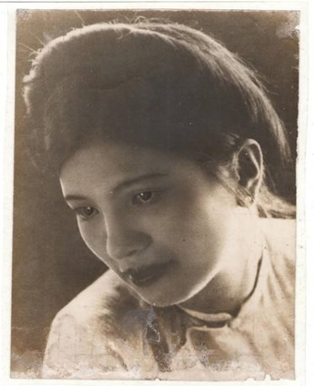

Đại gia đình Lê Phú bao gồm tất cả các người con, người cháu của ông nội tôi lên một toa đen tàu hỏa từ Hà Nội và điểm dừng là ga Chí Chủ. Đây là quê của người con dâu thứ ba của ông nội tôi. Tôi thường gọi là thím Ba. Nhờ sự giúp đỡ nhiệt tình của gia đình thím Ba mà ông nội tôi mua được một quả đồi tên là đồi Dọc Bùng tại thôn Chí Chủ, xã Chí Tiên huyện Thanh Ba tỉnh Phú Thọ. Quả đồi được mau chóng khai phá để trồng sắn, nuôi gà vịt… lấy lương thực theo kháng chiến trường kỳ. Mẹ tôi, một người buôn bán giỏi ở Hà Nội trước đây, đã mở một xưởng làm thuốc lá thủ công) lấy tên là hãng thuốc lá Lương Sơn theo khẩu hiệu “kháng chiến toàn diện” của cụ Hồ. Xưởng thuốc lá phát triển rất tốt. Nhiều con cháu trong họ đã trở thành công nhân làm thuê cho mẹ tôi. Thuốc lá nhãn hiệu Lương Sơn được bán rộng rãi ở vùng tự do lúc đó. Nhưng đến giữa năm 1950, gia đình bố mẹ tôi phải hồi cư về Hà Nội, vì mẹ tôi mang bầu, không thể ngược xuôi buôn bán được nữa. Ông bà nội tôi và gia đình họ Lê Phú vẫn theo kháng chiến đến cùng.

Bà Nguyễn Thị Phương mẹ của tác giả
Khi đặt chân lên quả đồi Dọc Bùng ở Chí Chủ, lúc đó tôi mới tròn 5 tuổi và tôi chỉ ở đó cho đến năm 8 tuổi lại theo bố mẹ về Hà Nội sống nhờ bên ngoại giàu có. Nhưng trong ký ức tuổi thơ của tôi, những ngày sống ở Chí Chủ vô cùng thơ mộng, hấp dẫn. Thiên nhiên miền Trung du Phú Thọ với “rừng cọ, đồi chè, đồng xanh ngào ngạt” đúng như nhà thơ Tố Hữu đã viết. Quả đồi gia đình tôi ở chung quanh là đầm nước. Buổi sáng khi sương còn giăng trên mặt hồ đã có những đoàn thuyền nan bé xíu buông lưới, gõ mạn thuyền đồi cá vô lưới… nhộn nhịp cả một góc rừng. Những chiều mưa đứng trên đồi nhìn xuống mặt hồ mù mịt thấy nao nao người. Tôi thường thẫn thờ chơi một mình ở những “yên ngựa” võng xuống nối liền hai quả đồi. Ở đó có những hòn đá cuội đen bóng như than. Hết thung lũng lại lên những quả đồi sim hoa tím quả ngọt, nhiều khi ăn sim chín đến say sẩm mặt mày. Đẹp nhất vẫn là những đồi cọ. Đứng từ xa nhìn một đổi cọ mới thấy hết vẻ đẹp của miền Trung du. Rừng không âm u rậm rịt mà tươi sáng. Nắng chiếu xuống những tán lá cọ to như cái nia tạo bóng râm bên dưới như mời gọi du khách đến gần. Những tàu cọ non màu trắng ngà xòe ra như đang múa điệu múa miền Trung du sơn cước… Vào mùa hè, ve kêu trong rừng cọ nghe như bản giao hưởng bất tận. Những con ve sầu ở miền Trung du to như ngón chân cái và dài đến mười phân, màu đen nhung có vạch đỏ ngay lưng rất đẹp. Trẻ con địa phương gọi là con cồ cộ. Đám trẻ chúng tôi lấy những cái cần câu nối vào nhau, đầu cầu câu dính nhựa mít có thể dính được những chú cồ cộ đâu trên thân cọ…
Ba năm ở Chí Chủ, ngoài hạnh phúc được thưởng ngoạn thiên nhiên diễm lệ của miền Trung du, tôi còn được chứng kiến cảnh tản cư kháng chiến chống Pháp của dân miền xuôi đi kháng chiến và tình cảm “lá lành đùm lá rách” của đồng bào miền ngược. Gia đình chúng tôi, sau khi mua được quả đồi, nhờ sự giúp đỡ của đồng bào địa phương, làm được một dẫy nhà lá dài, vừa để ở, vừa để làm “xưởng” thuốc lá của mẹ tôi. Đồng bào địa phương gọi quả đồi Dọc Bùng nơi chúng tôi ở là “Trại Hà Nội”. Xung quanh khu nhà ở, gia đình chúng tôi trồng sắn làm lương thực. Đã gần 60 năm rồi mà tôi vẫn nhớ hàng ngày phải đi nhặt lá sắn rụng dưới chân rừng sắn trên đồi để làm củi nấu “cơm”. Sở dĩ chữ cơm phải cho vào dấu nháy nháy, vì nồi cơm có 90% là sắn. Hạt cơm chỉ dính vào các miếng sắn mà thôi. Tất cả mọi người trong gia đình đều phải ăn cơm độn sắn như vậy. Riêng tôi, vì là cháu đích tôn của dòng họ nên được ngồi ăn riêng với ông bà nội tôi, ăn cơm là chủ yếu. Số phận đã cho tôi những ưu ái từ thủa còn bé như thế. Sau này đến lúc về già rồi, một cô em họ trong dòng họ Lê Phú còn nhắc chuyện cũ… Cô em tôi “tố khổ” rằng, hồi còn nhỏ, mỗi khi tôi đi đâu về, ông nội vẫn bắt cô phải cởi giày cho tôi! Chẳng biết chuyện ấy có thật hay không, tôi đành bảo cô em tôi: Thì bây giờ cô ngồi lên ghế để tôi cởi giày cho cô, trừ nợ vậy! Cả nhà đều cười. Chuyện cũ nhắc lại là như thế. Xã hội phương đông là như thế, biết làm sao được!
Ngày ấy ở “Trại Hà Nội” của chúng tôi đã xảy ra một sự kiện gây chấn động cả thôn Chín Chủ vốn yên tĩnh và thơ mộng này. Đó là vụ oanh tạc của bốn chiếc máy bay khu trục Pháp vào trại. Số là, quả đồi mà đại gia đình chúng tôi ở được phát quang, lại dựng những dãy nhà lá to, đẹp để vừa làm nhà ở, vừa làm xưởng thuốc lá. Vì thế, một buổi chiều, bốn chiếc máy bay khu trục cũ của Pháp đi oanh kích ở đâu về, có lẽ chúng còn thừa đạn và tưởng rằng khu “Trại Hà Nội” của gia đình chúng tôi là cơ quan của Việt Minh… nên chúng lao xuống bắn phá. Lúc đó tôi đang thơ thẩn chơi ở trên đỉnh một quả đồi bên cạnh nên nhìn rất rõ bốn chiếc máy bay lượn vòng trên khu “Trại Hà Nội” và từng cái thay nhau lao xuống nã đạn. Cứ thế, thay nhau lao xuống… chừng hơn 10 phút sau, có lẽ là hết đạn nên chúng kéo nhau bay đi. Khi chúng đi rồi, cả khu trại bốc khói mù mịt. Chỉ sau đó ít phút, đồng bào ở các quả đồi xung quanh nhất loạt bơi thuyền sang cứu “Trại Hà Nội”. Có thuyền còn mang cả băng cứu thương, thuốc men… sang cứu trợ. Nhưng may quá, cả gia đình tôi không ai bị thương, dù là bị thương nhẹ. Điều kỳ diệu này là nhờ sự sáng suốt của ông nội tôi. Cụ đã chỉ đạo cho đào hầm chữ chi ngay trong nhà. Khi nghe thấy tiếng máy bay là tất cả mọi người nhảy ngay xuống hầm sâu. Đất đồi cứng, lại khô ráo nên mọi người nằm ép sát xuống đáy hầm, đạn chỉ bắn xéo nên không ai bị dính đạn cả, còn tất cả đồ đạc trong nhà thì tan hoang như một bãi chiến trường. Đã gần 60 năm mà tôi vẫn nhớ như in những hình ảnh đó. Những chiếc chăn bông để trê giường bị đạn của súng liên thanh bắn xuyên qua, đầu đạn còn kéo theo những nắm bông “nhét” vào các bức tường được làm bằng phên tre. Khi máy bay đi rồi, bọn trẻ con chúng tôi được phân công gỡ những búi bông đó ra để “tái cấu trúc” lại chiếc chăn bông! Các cột nhà là các cây bương (một loại nứa to bằng bắp đùi người lớn) bị dính đạn đều vỡ toác ra. Một con cá chép to treo dưới bếp bị đạn bắn… mất đầu. Và một chi tiết khiến tất cả mọi người đều ngạc nhiên là đôi giày cao cổ bằng da, thứ giầy của hiến binh Pháp (police militaire) đi tuần tiểu bằng mô tô mà ông chú thứ hai của tôi đưa cho ông nội tôi đi…kháng chiến… để dựng đứng ở dưới gầm bàn, bị nhiều vết đạn xuyên qua mà đôi giày vẫn đứng thẳng. Sức đạn đi quá nhanh khiến đôi giày da không kịp… đổ(!) Sự an toàn của gia đình tôi khiến tất cả bà con đến cứu nạn phải ngạc nhiên. Mọi người đều nhận ra sự lợi hại của những căn hầm trú ẩn được đào ngang dọc ngay trong nhà. Nếu hào được đào ở xa, thì khi chạy ra trú ẩn, nhất định sẽ có người bị dính đạn.
Những năm đầu của cuộc kháng chiến chống Pháp, người ta được chứng kiến tình cảm thiêng liêng của đồng bào với chính phủ Việt Minh. Trăm nhà như một. Tất cả đều yêu thương đùm bọc nhau, đoàn kết xung quanh chính phủ Hồ Chí Minh để kháng chiến trường kỳ giành độc lập. Sự đùm bọc của đồng bào địa phương đối với gia đình đi tản cư từ Hà Nội như gia đình tôi đã nói lên sự thật đó. Công bằng mà nói, lúc đó những người cộng sản Việt Nam đồng nghĩa với những người yêu nước và được nhân dân cả vùng tự do đến vùng tạm chiếm ủng hộ tuyệt đối, trừ những phần tử theo đuôi Pháp. Có những hình ảnh mà tôi không bao giờ quên về những cán bộ của chính phủ cụ Hồ lúc đó. Ông nội tôi có 5 người con trai như đã kể ở trên. Trừ ông bố tôi không hoạt động, còn bốn người chú ruột của tôi đều tham gia hoạt động trong hàng ngũ Việt Minh. Vì thế gia đình tôi tản cư, đóng ở Chí Chủ Phú Thọ là một địa điểm trung chuyển, nghỉ chân cho các cán bộ Viẹt Minh từ vùng tạm chiếm lên chiến khu Việt Bắc. Khi kháng chiến chống Pháp bùng nổ, thì người chú thứ nhất của tôi mà tôi thường gọi là chú Hai (thứ hai, sau bố tôi là cả) là giám đốc công an khu 11, tức khu Hà Nội. Khi nha công an trung ương chuyển lên Việt Bắc, thì ông là phó ty trật tự tư pháp, đồng thời là phó giám đốc công an liên khu ba. Có lẽ vì thế mà các đoàn từ khu ba lên Việt Bắc thường nghỉ chân tại nhà tôi ở Chí Chủ, Phú Thọ. Có nhiều lần ông Nguyễn Lương Bằng, có lẽ lúc đó phụ trách tài chính của Đảng, nên thường mang hàng quý của đồng bào khu ba quyên góp cho kháng chiến lên Việt Bắc, đi qua Phú Thọ thì thế nào cũng ghé lại nhà tôi tức “Trại Hà Nội”. Một lần, ông dẫn một đoàn ngựa thồ mang hàng lên Việt Bắc, chủ yếu là thuốc tây, có ghé lại nghỉ ở nhà tôi. Ông có một chiếc khăn rửa mặt đã rách, ông nhờ mẹ tôi khíu lại (có nghĩa là lấy kim chỉ khâu những chỗ đã rách liền lại với nhau. Tôi phải nói rõ từ “khíu” khác với “vá” vị sợ sau này các bạn trẻ không hiểu khíu là cái gì. Cũng như thằng con tôi, nó chỉ biết cái áo mưa, khi nói đến áo tơi thì nó hỏi là áo gì?). Lại nói về ông Bằng. Khi ăn cơm, có một bát cà bung để từ trưa, đến chiều đã vữa mẹ tôi định đem đổ đi thì ông Bằng giữ lại, ông nói để tôi ăn. Trước khi ông đưa đoàn ngựa thồ rời nhà tôi lên Việt Bắc, ông cho mẹ tôi một hộp dầu cù là con hổ phù, tức hộp dầu cù là có hình con hổ chạm nổi ở trên nắp hộp. Mẹ tôi than phiền ông này nghèo quá mà cũng keo quá! Mẹ tôi có hay đâu ông phụ trách tài chính của một đảng đang cầm quyền. Ông có cả đoàn ngựa thồ chở toàn đồ quý, nhưng đó là những thứ đồng bào quyên góp cho kháng chiến, ông không dám tơ hào cái kim sợi chỉ. Sau này bà nội tôi định làm mai mối ông cho em ruột của bà, là một infirmiere ở Hà Nội theo bà đi tản cư chưa có chồng. Nhưng bà trẻ của tôi (theo cách gọi trong gia đình) đã chê ông Bằng nghèo nên… không lấy. Sau đó bà lấy một ông cán bộ lãnh đạo của ty giáo dục Phú Thọ. Ông này vợ mất, đã có hai đứa con gái. Khi kháng chiến thành công, ông Bằng làm đến chức phó chủ tịch nước, chúng tôi vẫn nói đùa với bà trẻ phải chi hồi đó bà trẻ chịu lấy ông Bằng thì bây giờ chúng cháu… được nhờ(!)
Bây giờ, nhiều năm trôi qua ngồi nghĩ lại so sánh con người thời đó với bây giờ thấy thật buồn, thật trớ trêu. Khi khởi đầu, Đảng có một lớp cán bộ đáng quý như thế. Nhưng đi theo Chủ Nghĩa Cộng Sản, một chủ nghĩa không tưởng rồi tuân thủ cái gọi là “tập trung dân chủ”, đã loại dần những cán bộ tốt ra khỏi guồng máy cai trị của mình khi có toàn vẹn đất nước trong tay, Với tập trung dân chủ, thực chất là độc đoán, độc tài của một nhóm người đã dẫn đến một bộ máy toàn trị đa phần là kẻ xấu như ngày hôm nay. Ngày nay thế hệ trẻ có tư tưởng dân chủ chỉ nhìn thấy bộ máy của Đảng toàn những gương mặt như Nguyễn Phú Trọng, Nguyễn Tấn Dũng, Nguyễn Sinh Hùng, Đinh Thế Huynh… và một bộ máy công an hung hãn đàn áp dân chủ… nên họ phủ định hết, không chút nhân nhượng với cộng sản. Họ chưa từng được chứng kiến một ông cán bộ phụ trách tài chính của Đảng dùng một cái khăn lau mặt rách nát trong khi có cả kho của quý trong tay… như thế hệ chúng tôi. Nhưng không trách họ được. Có lẽ, nói về Đảng và chế độ cộng sản ở Việt Nam một cách “toàn cảnh” phải lấy lời của bác sĩ Nguyễn Khắc Viện lúc ông ở tuổi 82 là công bằng nhất: “Đời tôi là đời một kẻ ngây thơ, phần “thơ” là đi theo cụ Hồ kháng chiến chống xâm lược, tôi giữ nó lại. Phần “ngây” là đi theo CNXH, tôi vứt nó đi. Nhưng nếu phải sống lại, tôi vẫn đi con đường đó…”
Đã có lần tôi chép nguyên văn câu nói này đưa cho ông Võ Văn Kiệt, lúc đó đang là cố vấn Ban chấp hành trung ương Đảng coi. Xem xong, ông Kiệt không nói gì cả(!) Vì thế, tôi rất đồng cảm với nhà trí thức đang sống ở Pháp Nguyễn Gia Kiểng khi ông cho rằng, các thế hệ sau này có thể không khắt khe với những người cộng sản lớp trước, nhưng lịch sử sẽ rất khắt khe với những người cộng sản hôm nay. (Tức thời điểm 2012 này).
Tuổi thơ của tôi ở Chí Chủ còn được chứng kiến nhiều hình ảnh khó quên. Nó đeo đẳng tôi cho đến lúc về già. Đó là những ngày mùng 1 Tết, ông nội tôi tập hợp cả đại gia đình trước khoảng sân rộng trước nhà. Mọi người chào cờ. Kéo cờ lên dần đỉnh cột và hát quốc ca. Khi cờ lên đến đỉnh thì quốc ca vừa dứt. Ông nội tôi rút súng lục ra, bắn một phát chỉ thiên để chào mừng năm mới. Chào mừng thêm một năm kháng chiến. Hào hùng lắm! (Súng do ông chú tôi “cấp” cho ông nội tôi). Hồi đầu Cách mạng Tháng Tám, ông nội tôi cũng có một khẩu súng lục, cũng do ông chú tôi “cấp” nhưng sau đó bị ông chủ tịch xã mượn chắc là để đeo cho oai. Ông chủ tịch xã là ông Minh Tiến, sau làm đến chức Thứ trưởng Bộ Công An. Ông ta là một thư lại rất láu cá. Tôi sẽ kể về sau. Cái giấy “mượn” súng có đóng dấu hẳn hoi, đến bây giờ chú em họ tôi còn giữ. Tôi thường được chú giở ra cho xem. Chú em tôi giữ rất cẩn thận và coi như đồ gia bảo. Ở Chí Chủ, lâu lâu các chú tôi đi kháng chiến, mỗi lần có dịp đi qua Phú Thọ lại ghé thăm nhà. Đó là những giây phút vui nhất trong gia đình. Người chú thứ tư của tôi, tôi thường gọi là chú Năm, tính theo thứ tự từ bố tôi là cả (cả, hai, ba, tư, năm) tên là Lê Phú Hào, mỗi lần về nhà ông lại dậy chúng tôi học hát. Khi chúng tôi hát, ông đánh đàn và đệm cho chúng tôi. Người chú thứ ba thì đi bộ đội tên là Lê Phú An. Có một buổi tối, chú tôi đem một tập thơ nhỏ đọc cho cả nhà nghe. Tôi còn nhớ, khi nghe bài “Bầm ơi” của nhà thơ Tố Hữu, mọi người chăm chú nghe, rưng rưng cảm động. Quả thật thời đó con người ta thương yêu nhau lắm. Sau bao năm nô lệ, nước Việt Nam được độc lập ai cũng vui sướng, mặc dù còn thiếu thốn trăm bề:
“Củ khoai củ sắn thay cơm
Khoai bùi trong dạ, sắn thơm trong lòng
Ngớp hụm nước giếng trong đỡ khát
Nhìn trời cao mà mát tâm can…” (Tố Hữu)
Cái tình người mà Tố Hữu viết như thế là có thật. Đau đớn và bẽ bang thay là bây giờ, no đủ hơn lúc đó, nhưng một nhà thơ cũng rất nổi tiếng là Bùi Minh Quốc phải thốt lên rằng:
“Ngoảnh mặt phía nào cũng phải ghìm cơn mửa
Cả một thời đểu cáng đã lên ngôi!”
Rất nhiều người thời nay khi nhắc đến xã hội Việt Nam kinh tế thị trường định hướng XHCN đã trích câu thơ này của Bùi Minh Quốc như một sự khái quát có giá trị, vì nó nói thay cho tâm trạng của hàng triệu người Việt Nam hôm nay,
Những năm ở Chí Chủ, tôi thấy ông nội tôi nhẫn nại dạy bà nội tôi học chữ. Bà nội tôi mù chữ từ nhỏ, bây giờ nước độc lập rồi, chả nhẽ ông nội tôi lại để vợ mình không biết chữ. Nhưng bà nội tôi tối dạ lắm, không học được chữ. Ông nội tôi đã chỉ dạy bà viết chữ E, tức tên bà nội tôi là Nguyễn Thị E. Nhưng học mãi mà bà tôi vẫn không viết nổi. Tôi còn thấy ông nội tôi viết ba chữ: Hồ Chí Minh thật to để bà tôi nhận mặt chữ, phòng khi sau này có đi bầu cử thì nhớ không gạch tên đó. Thế là sau này cứ đưa chữ Hồ Chí Minh ra là bà nhận được mặt chữ. Ông nội tôi mừng lắm. Là một công chức mẫn cán của Phủ Toàn quyền Đông Dương, ông nội tôi đã kính yêu chủ tịch Hồ Chí Minh như thế. Đó là sự thật. Nhưng nay, trong lúc tôi đang viết những dòng chữ này, tôi đọc được bài viết của nhà báo Bùi Tín trên mạng Internet bình luận về bài: “Hồ Chí Minh là một người cộng hòa hay cộng sản” của nhà nghiên cứu Nhật Bản, giáo sư Tsuboi Yushiharu. Ông Bùi Tín dẫn ra 24 năm cầm quyền, ông Hồ đã giải thể trường đại học luật, xử chết 27 ngàn người trong Cải cách ruộng đất bằng “tòa án nhân dân” thì sao gọi là cộng hòa được? Không có báo chí tự do thì sao gọi là cộng hòa được? Lúc sắp ra đi, ông Hồ chỉ mong được gặp Marx Lenin, không mong gặp tổ tiên thì là cộng sản chứ sao là cộng hòa được?
Nhà văn Phạm Đình Trọng trong một bài viết mới đây nhan đề “Thông điệp tháng Tám”. Sau khi phân tích tất cả những hiểm họa của đất nước đang diễn ra, ông kết luận: “Thế kỷ trước, thế hệ đi tìm đường cứu nước đã lạc đường dẫn đến thế nước hiểm nghèo hôm nay!” Đó là một đánh giá công bằng, khách quan, chính xác. Không ai phủ nhận những người cộng sản thế kỷ 20 không yêu nước. Nhưng đi lạc đường, lạc vào quỹ đạo cộng sản, vậy thôi. Đau xót là vậy. Quỹ đạo cộng sản là cái gì thì đã có ngàn, vạn bài báo, cuốn sách viết về nó, không cần phải nhắc lại.
Ở Chí Chủ đến năm 1950 thì mẹ tôi mang bầu, không thể ngược xuôi buôn bán được nữa nên gia đình tôi phải hồi cư về Hà Nội. Hồi đó, hễ đi kháng chiến mà quay về vùng tạm chiếm thì bị gọi là “dinh tê” về thành. Dinh tê là có lỗi, có tội với kháng chiến nên phải đi lén lút. Mẹ tôi cùng bốn chị em tôi cùng bà cô ruột tôi, gồm toàn thể là đàn bà trẻ con rồi đồi Dọc Bùng trong một đêm tối. Lúc chúng tôi xuống đò để rời đồi Dọc Bùng, bà nội tôi luôn mồm khấn: “Lậy bốn phương trời, mười phương đất… phù hộ cho con cháu tôi đi đến nơi về đến chốn”. Lúc đó, tất cả đều khóc như mưa. Từ cái đêm hôm đó, đoàn hơn 10 người tất cả là đàn bà và trẻ con đã tiến hành một cuộc “vạn lý trường chinh” hơn 100 km từ Chí Chủ, Phú Thọ về Hà Nội. Đêm đi, ngày nghỉ để tránh sự kiểm soát của dân quân du kích vùng tự do Phú Thọ. Trí nhớ của đứa trẻ lên 8 tuổi đã không cho phép tôi nhớ nổi chúng tôi đã đi không biết bao nhiêu đêm trong đói khát lo sợ. Sau nhiều đêm đi bộ, một buổi sáng đẹp trời chúng tôi về đến thị xã Sơn Tây, cửa ngõ Hà Nội, thuộc vùng tạm chiếm. Về Hà Nội, sau một thời gian ở nhà gia đình ông bác anh ruột mẹ tôi, một gia đình buôn bán giàu có ở phố Hàng Buồm, về sau ông bị quy kết là tư sản… chúng tôi may mắn đòi lại được căn nhà ở phố Hàm Long, nơi mẹ tôi có một cửa hàng bán đồ hộp trước kia. Tôi bắt đầu đi học, theo chương trình tiểu học, bắt đầu là lớp năm, lớp tư, lớp ba… cho đến lớp nhất. Vì trước đó đã được ông nội tôi dậy cho biết đọc biết viết nên tôi được nhận vào học lớp tư, không phải qua lớp năm của trường tiểu học Ngô Sỹ Liêm ở phố Hàm Long. Đó là một ngôi trường rất nên thơ với những lớp học tràn đầy ánh sáng, sân trường có những cây bang cổ thụ rợp bóng mát. Ngôi trường đến bây giờ vẫn còn (2012) nhưng được xây lên thành một tòa nhà nhiều tầng, không cân xứng với khuôn viên nhỏ bé của nó như xưa kia. Linh cảm thế nào ngôi trường xinh đẹp này cũng bị phá đi để xây lên cao tầng. Một lần từ Sài Gòn ra Hà Nội, tôi đã đem máy tới chụp ngôi trường kỷ niệm này. Tấm hình này tôi vẫn giữ và những chiếu “gió tím mưa xanh” tôi vẫn đem ra ngắm lại ngôi trường tiểu học thời thơ ấu của mình, ôn lại những ngày đầu tiên cắp sách tới trường đầy kỷ niệm.,,
Nếu ở Chí Chủ tuổi ấu thơ của tôi được tắm mình trong thiên nhiên diễm lệ của miền Trung “rừng cọ đồi chè”… của đất nước thì tuổi thơ đi học của tôi ở Hà Nội là những năm lêu lổng nhất. Thời đó không có cái quái thai “học thêm” như thời nay. Sáng đi học, chiều về là tôi cùng lũ trẻ con lê la trên hè phố. Phố Hàm Long với những cây cơm nguội, phố Lò Đức gần đó là những cây sao nổi tiếng, phố Phan Chu Trinh thảm cỏ rộng và những hàng cây sấu cổ thụ… Ba con phố ấy đổ về ngã năm: Hàm Long, Lò Đúc, Lê Văn Hưu, Hàn Thuyên, Phan Chu Trinh… là “đất thánh” của bọn trẻ chúng tôi. Mùa nào cũng có trò chơi của mùa ấy. Mùa chơi quay, tiếp đếnn mùa chơi đáo, mùa chơi bi… hầu như suốt buổi chiều mỗi ngày chúng tôi đều lê la trên vỉa hè với những trò chơi bất tận đó. Bây giờ những trò chơi của trẻ con ngày ấy đã mất hẳn. Ngoài ra lũ trẻ chúng tôi còn có những trò chơi gắn với bốn mùa xuân hạ thu đông. Mùa hè chúng tôi đi bắt ve sầu bằng cái cần câu có dính nhựa mít. Mùa mưa đi đổ dế. Khi phát hiện một tổ dế, lũ chúng tôi thay nhau đi múc nước cống đổ xuống tổ. Khi con dế không còn chịu được nước ngập nữa, nó phải bò lên miệng hố, thò hai cái râu lên khỏi mặt đất. Chúng tôi lấy que xiên xuống, chặn đường rút lui của nó rồi lần tay xuống lỗ, bắt gọn những chú dế mèn bóng nhẫy… Những con dế đó được nuôi trong những chiếc hộp carton, được cho ăn cỏ non, được phơi sương mỗi đêm… Đến mùa sấu chín, chúng tôi làm súng cao su, nhằm những chum sấu chín vàng trên cây để bắn, Sấu chín ngọt lịm như tuổi thơ của tôi trẹn vỉa hè phố phường Hà Nội. Hồi đó Hà Nội còn vắng vẻ, buổi trưa, khi mọi người yên nghỉ trong nhà, tôi và chúng bạn thơ thẩn dưới những hàng cây cơm nguội, những hàng sấu, nghe tiếng ve kêu ra riết trên cành sao mà thú vị, say mê đến thế. Năm ngoái tôi có dịp ra Hà Nội để hẳn một ngày đi bộ tha thẩn trên các hè phố Hàm Long, Phan Chu trinh, Hàn Thuyên, Hàng Chuối, vườn hoa Pasteur, phố Nguyễn Huy Tự ra đến bờ sông… đâu đâu cũng thấy hàng quán lấn hết vỉa hè, xô bồ, hỗn tạp mất hẳn cái yêu tĩnh nên thơ của những biệt thự nhỏ nối đuôi nhau ở các phố Hàn Chuối, Hàn Thuyên… năm xưa. Hà Nội bây giờ chẳng đem lại cho tôi cảm xúc gì ngoài cái bệ rạc, bát nháo, nửa quê, nửa tỉnh, ông không ra ông, thằng không ra thằng… Tôi cũng để ra một ngày lên tận huyện Thạch Thất, Sơn Tây cũ xem cái gọi là Hà Nội mở rộng bây giờ. Thật kinh ngạc. Vùng bán sơn địa với núi đá lởm chởm này bây giờ cũng thuộc về Hà Nội. Vậy là thủ đô nước Việt Nam cũng có cả vùng núi. Hai Bà Trưng theo sử sách nói quê ở Mê Linh. Nay Mê Linh cũng thuộc về Hà Nội. Sử phải cập nhật ngay và viết là: Hai Bà Trưng quê ở Hà Nội…
Các nhóm lợi ích đã phá nát đất nước này một cách không thương tiếc. Hễ ở đâu đất đai có thể chia chác được là chúng làm, bất kể điều gì, kể cả vẽ lại bản đồ đất nước.